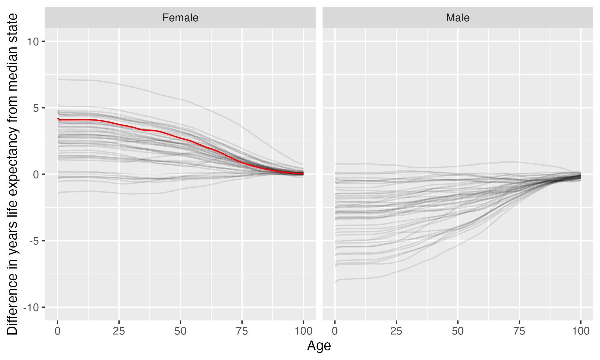

University of Rhode Island
University of Rhode Island is located in Kingston, Rhode Island. It is a public, 4-year or above institution.
From Wikipedia: The University of Rhode Island (URI) is a public land-grant research university with its main campus in Kingston, Rhode Island, United States. It is the flagship public research as well as the land-grant university of the state of Rhode Island. Its main campus is located in the village of Kingston in southern Rhode Island. Satellite campuses include the Feinstein Campus in Downtown Providence, the Rhode Island Nursing Education Center in Providence’s Jewelry District, the Narragansett Bay Campus in Narragansett, and the W. Alton Jones Campus in West Greenwich. The university offers bachelor’s degrees, master’s degrees, and doctoral degrees in 80 undergraduate and 49 graduate areas of study through nine academic schools and colleges. These schools and colleges include Arts and Sciences, Business, Education and Professional Studies, Engineering, Health Sciences, Environment and Life Sciences, Nursing, Pharmacy and Oceanography. Another college, University College for Academic Success, serves primarily as an advising college for all incoming undergraduates and follows them through their first two years of enrollment at URI. The university is classified among “R2: Doctoral Universities – High research activity”. As of 2019, the URI enrolled 14,653 undergraduate students, 1,982 graduate students, and 1,339 non-degree students, making it the largest university in the state.
Overview of institution
Institution kind: Doctoral Universities: High Research Activity
Undergrad program: Balanced arts & sciences/professions, some graduate coexistence
Graduate program: Research Doctoral: Comprehensive programs, no medical/veterinary school
Enrollment profile: High undergraduate (see more details below)
Average net price for undergrads on financial aid: $20,496 (1.5 times the equivalent cost of Harvard).
Average net price for families with $30K-48K income: $13,601 (This is $12,205 more expensive than what Harvard costs for equivalent students).
Actual price for your family: Go here to see what your family may be asked to pay. It can be MUCH lower than the average price but also higher for some.
Size and setting: Four-year, large, primarily residential
In state percentage: 39.3% of first year students come from Rhode Island
In US percentage: 98.9% of first year students come from the US (note that 0.0% have no residence reported)
Graduation rate (within 6 years) for students seeking a Bachelors: 69.2% (this is what is usually reported as “graduation rate”)
Graduation rate (within 4 years) for students seeking a Bachelors: 52.9%
Student to tenure-stream faculty ratio: 22.6 (undergrads to tenure-stream faculty)
Student to faculty ratio: 16.5 (undergrads to all faculty)
Degrees offered: Certificate of less than 1 year, Certificate of at least 12 weeks but less than 1 year, Bachelor’s degree, Postbaccalaureate certificate, Master’s degree, Post master’s certificate, Doctor’s degree: research scholarship, Doctor’s degree: professional practice, Doctor’s degree: other
Schedule: Semester
Institution provides on campus housing: Yes
Dorm capacity: There are enough dorm beds for 5523 students
Freshmen required to live on campus: No
Meal plan: Yes, number of meals in the maximum meal plan offered
Covid vaccination requirement for students: At some point during the pandemic (this may have changed), this institution required students to be vaccinated against covid (based on info from here)
Covid vaccination requirement for faculty/staff: At some point during the pandemic (this may have changed), this institution required faculty and/or staff to be vaccinated against covid (based on info from here)
Advanced placement (AP) credits used: Yes
Disabilities: 11 percent of undergrads are registered as having disabilities.
Overview of location
- Abortion in this state: Some restrictions/protections (based on https://states.guttmacher.org/policies/ as of May 10, 2023)
- Gun law stringency: B (higher grade = more stringent)
- State rep support for contraception: 100% of US reps from this state voted in favor of legal protections for contraception.
- State rep support for recognizing same-sex and interracial marriage: 100% of US reps from this state voted in favor of requiring states to recognize same-sex and interracial marriages performed in other states
- Anti-trans legislative risk: Low risk (based on Erin Reed’s work, as of April 2, 2023)
- Ecological region: Northeastern coastal forests
- Biome: Temperate Broadleaf & Mixed Forests
- Distance to mountains: 69.8 miles to Appalachian Mountains
- Climate: See overview at WeatherSpark
Similar institutions
This is using information about school size, acceptance rate, yield rate, graduation rate, cost, athletic conference, and similar metrics, but it can miss important axes of similarity (for example, culinary versus hair styling schools).
Map
Enrollment
| University of Rhode Island | Change over ≤ 11 years | Trend | Atlantic 10 Conference | Doctoral Universities: High Research Activity | |
|---|---|---|---|---|---|
| Undergrads (full time) | 12,791 (2021) |

|
↑ 114 per year |
||
| Undergrads (part time) | 1,953 (2021) |

|
↑ 76 per year |
||
| Grad students (full time) | 1,738 (2021) |

|
|||
| Grad students (part time) | 1,029 (2021) |

|
↓ -25 per year |
||
| Admission rate (undergrads) | 76% (2021) |

|
|||
| Yield rate (percent of applicants offered undergraduate admission who accept) | 17% (2021) |

|
✪✪✪ Better (higher) than 47% |
✪✪ Better (higher) than 34% |
|
| Graduation rate (bachelors in 6 years) | 69% (2021) |

|
✪ Better (higher) than 18% |
✪✪✪✪ Better (higher) than 66% |
Student financing
At many universities, almost no students pay the listed tuition and fees (“sticker price”): instead, their financial aid package lowers this dramatically, but how much students pay can vary substantially based on family income and other factors. The tuition below is the average across many students receiving aid: your family may be asked to pay less or more than this.
| University of Rhode Island | Change over ≤ 11 years | Atlantic 10 Conference | Doctoral Universities: High Research Activity | |
|---|---|---|---|---|
| Average net price (for students awarded aid) | $20,496 (2020) |

|
✪✪✪✪ Better (lower) than 76% |
✪✪ Better (lower) than 33% |
| Undergrads getting federal aid | 53% (2021) |

|
✪✪✪✪✪ Better (higher) than 94% |
✪✪✪ Better (higher) than 60% |
| Undergrads getting any aid | 97% (2021) |

|
✪✪✪ Better (higher) than 53% |
✪✪✪✪ Better (higher) than 68% |
| Undergrads getting Pell grants | 23% (2021) |

|
✪✪✪✪ Better (higher) than 65% |
✪✪ Better (higher) than 30% |
Teaching
| University of Rhode Island | Change over ≤ 11 years | Trend | Atlantic 10 Conference | Doctoral Universities: High Research Activity | |
|---|---|---|---|---|---|
| Undergrads per tenure track instructor (lower is better) | 23 (2020) |

|
✪✪ Better (lower) than 21% |
✪✪ Better (lower) than 33% |
|
| Undergrads per instructor (lower is better) | 16 (2020) |

|
↓ -0.1 per year |
✪ Better (lower) than 7% |
✪✪ Better (lower) than 34% |
| Total instructors | 772 (2020) |

|
↑ 12 per year |
||
| Tenure track instructors | 562 (2020) |

|
↑ 4.0 per year |
||
| Non-tenure track instructors | 210 (2020) |

|
↑ 8.4 per year |
Student details
| University of Rhode Island | Change over ≤ 11 years | |
|---|---|---|
| Dorm capacity | 5,523 (2021) |

|
| Percent of undergrads with registered disabilities (≤3 is rounded up to 3) | 11% (2021) |

|
Institution finances
| University of Rhode Island | Change over ≤ 11 years | Trend | Atlantic 10 Conference | Doctoral Universities: High Research Activity | |
|---|---|---|---|---|---|
| Revenue from tution and fees | 43% (2021) |

|
✪✪ Better (lower) than 35% |
✪ Better (lower) than 15% |
|
| Revenue minus expenses | $4.6 M (2021) |

|
✪ Better (higher) than 0% |
✪ Better (higher) than 15% |
|
| Revenue | $589 M (2021) |

|
↑ $14 M per year |
||
| Expenses | $584 M (2021) |

|
↑ $14 M per year |
||
| Assets | $1.1 B (2021) |

|
↑ $44 M per year |
✪✪ Better (higher) than 35% |
✪✪✪✪ Better (higher) than 62% |
Graduation rates
Graduation rates for bachelor’s degrees within 150% of normal time (6 years for a 4-year degree). Note that this uses US federal demographic data: it only has two genders and a specified set of ethnicities and races. For groups with small numbers, the graduation rate may be highly variable year to year (do all three people in this group graduate this year or just two of three, for example).
| University of Rhode Island | Change over ≤ 11 years | Atlantic 10 Conference | Doctoral Universities: High Research Activity | |
|---|---|---|---|---|
| Total | 69% (2021) |

|
✪ Better (higher) than 18% |
✪✪✪✪ Better (higher) than 66% |
| Men | 65% (2021) |

|
✪ Better (higher) than 18% |
✪✪✪✪ Better (higher) than 66% |
| Women | 73% (2021) |

|
✪ Better (higher) than 18% |
✪✪✪✪ Better (higher) than 65% |
| American Indian or Alaska Native men | 0% (2021) |

|
✪✪ Better (higher) than 33% |
✪✪ Better (higher) than 31% |
| American Indian or Alaska Native women | 43% (2021) |

|
✪ Better (higher) than 17% |
✪✪ Better (higher) than 31% |
| Asian men | 67% (2021) |

|
✪ Better (higher) than 12% |
✪✪✪ Better (higher) than 57% |
| Asian women | 66% (2021) |

|
✪ Better (higher) than 6% |
✪✪ Better (higher) than 29% |
| Black or African American men | 51% (2021) |

|
✪ Better (higher) than 6% |
✪✪✪✪ Better (higher) than 63% |
| Black or African American women | 72% (2021) |

|
✪✪✪ Better (higher) than 53% |
✪✪✪✪✪ Better (higher) than 81% |
| Hispanic men | 47% (2021) |

|
✪ Better (higher) than 0% |
✪✪✪ Better (higher) than 42% |
| Hispanic women | 65% (2021) |

|
✪ Better (higher) than 18% |
✪✪✪✪ Better (higher) than 67% |
| Native Hawaiian or other Pacific Islander men | 100% (2020) |

|
✪✪✪✪✪ Better (higher) than 100% |
✪✪✪✪✪ Better (higher) than 100% |
| Native Hawaiian or other Pacific Islander women | 100% (2021) |

|
✪✪✪✪✪ Better (higher) than 100% |
✪✪✪✪✪ Better (higher) than 100% |
| White men | 69% (2021) |

|
✪✪ Better (higher) than 24% |
✪✪✪✪ Better (higher) than 69% |
| White women | 75% (2021) |

|
✪ Better (higher) than 18% |
✪✪✪✪ Better (higher) than 62% |
| Two or more races men | 46% (2021) |

|
✪ Better (higher) than 6% |
✪✪✪ Better (higher) than 44% |
| Two or more races women | 64% (2021) |

|
✪✪ Better (higher) than 35% |
✪✪✪✪ Better (higher) than 63% |
| Nonresident alien men | 62% (2021) |

|
✪✪ Better (higher) than 35% |
✪✪✪ Better (higher) than 57% |
| Nonresident alien women | 71% (2021) |

|
✪✪ Better (higher) than 35% |
✪✪✪ Better (higher) than 56% |
Freshmen demographics
Demographic data for first time degree-seeking students. Note that this uses US federal demographic data: it only has two genders and a specified set of ethnicities and races.
| University of Rhode Island | Change over ≤ 11 years | |
|---|---|---|
| Men (percent freshmen) | 41% (2021) |

|
| Women (percent freshmen) | 59% (2021) |

|
| American Indian or Alaska Native men (percent freshmen) | 0.0% (2021) |

|
| American Indian or Alaska Native women (percent freshmen) | 0.1% (2021) |

|
| Asian men (percent freshmen) | 1.5% (2021) |

|
| Asian women (percent freshmen) | 2.2% (2021) |

|
| Black or African American men (percent freshmen) | 1.9% (2021) |

|
| Black or African American women (percent freshmen) | 1.9% (2021) |

|
| Hispanic men (percent freshmen) | 4.7% (2021) |

|
| Hispanic women (percent freshmen) | 6.6% (2021) |

|
| Native Hawaiian or Other Pacific Islander men (percent freshmen) | 0.0% (2021) |

|
| Native Hawaiian or Other Pacific Islander women (percent freshmen) | 0.0% (2021) |

|
| White men (percent freshmen) | 30% (2021) |

|
| White women (percent freshmen) | 45% (2021) |

|
| Two or more races men (percent freshmen) | 1.4% (2021) |

|
| Two or more races women (percent freshmen) | 1.7% (2021) |

|
| Race ethnicity unknown men (percent freshmen) | 0.5% (2021) |

|
| Race ethnicity unknown women (percent freshmen) | 0.7% (2021) |

|
| Nonresident alien men (percent freshmen) | 0.4% (2021) |

|
| Nonresident alien women (percent freshmen) | 0.7% (2021) |

|
Freshmen geography
| University of Rhode Island | Change over ≤ 11 years | |
|---|---|---|
| In state | 39% (2021) |

|
| US | 99% (2021) |

|
| Not reported | 0% (2021) |

|
Tenure track faculty
Tenure track faculty are those who are eligible for tenure. This includes both pre-tenure and tenured faculty. Once faculty get tenure, they are (generally) protected from being fired for intellectual reasons, helping to ensure their freedom in teaching and research. They can still lose their positions for misconduct, financial problems, not fulfilling their duties, or other reasons. Note that this chart uses US federal demographic data: it only has two genders and a specified set of ethnicities and races.
| University of Rhode Island | Change over ≤ 11 years | Trend | |
|---|---|---|---|
| Total (tenure-track count) | 562 (2020) |

|
↑ 4.0 per year |
| Women (tenure-track count) | 254 (2020) |

|
↑ 6.1 per year |
| Men (tenure-track count) | 308 (2020) |

|
↓ -2.1 per year |
| American Indian or Alaska Native (tenure-track count) | 3 (2020) |

|
↓ -0.2 per year |
| Asian (tenure-track count) | 79 (2020) |

|
↑ 3.3 per year |
| Black or African American (tenure-track count) | 19 (2020) |

|
↑ 0.9 per year |
| Hispanic or Latino (tenure-track count) | 17 (2020) |

|
|
| Native Hawaiian or other Pacific Islander (tenure-track count) | 0 (2020) |

|
|
| White (tenure-track count) | 413 (2020) |

|
↓ -2.8 per year |
| Two or more races (tenure-track count) | 1 (2020) |

|
|
| Nonresident alien (tenure-track count) | 30 (2020) |

|
↑ 2.5 per year |
Non-tenure track faculty
Non-tenure track faculty are not eligible for tenure. Some are hired one semester at a time, some have multi-year contracts. They typically have a higher teaching load than tenure track faculty, leaving less time for research or other creative endeavors. They are also easier to fire than tenured faculty. Sometimes they are external experts (a noted musician, a former senator) who are hired to teach some classes without the expected permanence of a tenure-track position. Note that this chart uses US federal demographic data: it only has two genders and a specified set of ethnicities and races.
| University of Rhode Island | Change over ≤ 11 years | Trend | |
|---|---|---|---|
| Total (non-tenure-track count) | 210 (2020) |

|
↑ 8.4 per year |
| Women (non-tenure-track count) | 138 (2020) |

|
↑ 5.6 per year |
| Men (non-tenure-track count) | 72 (2020) |

|
↑ 2.8 per year |
| American Indian or Alaska Native (non-tenure-track count) | 0 (2020) |

|
|
| Asian (non-tenure-track count) | 9 (2020) |

|
|
| Black or African American (non-tenure-track count) | 5 (2020) |

|
↑ 0.6 per year |
| Hispanic or Latino (non-tenure-track count) | 8 (2020) |

|
|
| Native Hawaiian or other Pacific Islander (non-tenure-track count) | 0 (2020) |

|
|
| White (non-tenure-track count) | 175 (2020) |

|
↑ 5.4 per year |
| Two or more races (non-tenure-track count) | 0 (2020) |

|
|
| Nonresident alien (non-tenure-track count) | 13 (2020) |

|
↑ 1.7 per year |
Library facilities
| University of Rhode Island | Change over ≤ 11 years | Trend | Atlantic 10 Conference | Doctoral Universities: High Research Activity | |
|---|---|---|---|---|---|
| Number of physical books | 934,078 (2021) |

|
↓ -70,301 per year |
✪✪✪ Better (higher) than 59% |
✪✪✪✪✪ Better (higher) than 81% |
| Physical library circulations per students and faculty | 0.6 (2020) |

|
↓ -0.6 per year |
✪ Better (higher) than 8% |
✪✪ Better (higher) than 25% |
| Digital library circulations per students and faculty | 1.9 (2020) |

|
✪ Better (higher) than 8% |
✪ Better (higher) than 6% |
Life expectancy
This hopefully will not be relevant for potential students, but it may be for people moving to an area longer term, such as faculty and staff choosing where to live. This uses information from US National Vital Statistics Reports for 2020; like much federal data, it assumes people are male or female. For age difference from median, it is from the median state, averaging across all genders (one consequence of this is that the difference from the median life expectancy is almost always negative for men).
- Life expectancy at birth: 80.9 years women (4.2 years over the median), years men ( years the median)
- Remaining life expectancy at age 18: 63.4 years women (4 years over the median), years men ( years the median)
- Remaining life expectancy at age 30: 51.7 years women (3.6 years over the median), years men ( years the median)
- Remaining life expectancy at age 45: 37.5 years women (3 years over the median), years men ( years the median)
- Remaining life expectancy at age 60: 24 years women (2.1 years over the median), years men ( years the median)
We can also plot the extra / fewer years of life expected for this state (red) compared to other states (dark gray) at each age. Again, this is normalized for the median state.

SAT scores
| University of Rhode Island | Change over ≤ 11 years | Trend | |
|---|---|---|---|
| Applicants submitting SAT | 30% (2021) |

|
|
| SAT Evidence Based Reading and Writing 25th percentile score | 550 (2021) |

|
|
| SAT Evidence Based Reading and Writing 75th percentile score | 650 (2021) |

|
|
| SAT Math 25th percentile score | 540 (2021) |

|
↑ 8.3 per year |
| SAT Math 75th percentile score | 640 (2021) |

|
↑ 7.7 per year |
ACT scores
| University of Rhode Island | Change over ≤ 11 years | Trend | |
|---|---|---|---|
| Applicants submitting ACT | 3% (2021) |

|
|
| ACT Composite 25th percentile score | 25 (2021) |

|
|
| ACT Composite 75th percentile score | 30 (2021) |

|
↑ 0.5 per year |
| ACT English 25th percentile score | 23 (2021) |

|
|
| ACT English 75th percentile score | 29 (2021) |

|
↑ 0.5 per year |
| ACT Math 25th percentile score | 22 (2021) |

|
↑ 0.3 per year |
| ACT Math 75th percentile score | 27 (2021) |

|